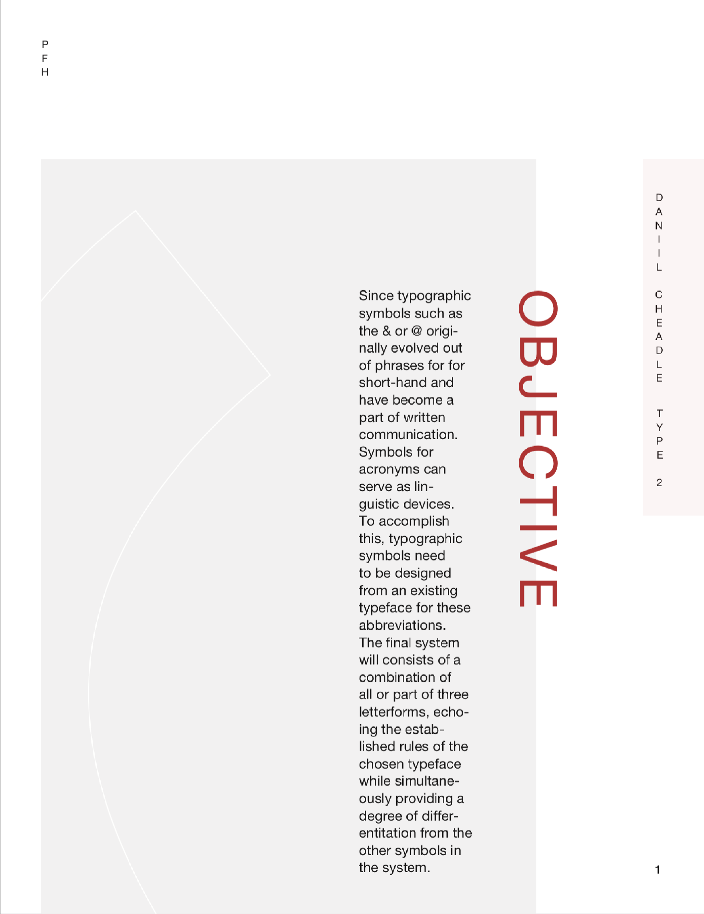

ACRONYM SYMBOLS
Glyph design, poster, print collateral, interactive design
KEYWORDS
Vertical International Modern
DESCRIPTION
Text messaging has been the most dominant form of communication in today's society with new features being created to allow typing to become faster and smoother. Using innovative typographic symbols for acronyms allows users faster interaction within a digital communication system.
BOOK DESIGN
Printed book to explain the objective of the project, typeface being used to create the symbols, and the process of creating these symbols. Below are the cover and back for the book.
OBJECTIVE
Symbols for acronyms can serve as linguistic devices just like the typographic symbols, amperstand and @, which originally evolved out of phrases for short-hand.
